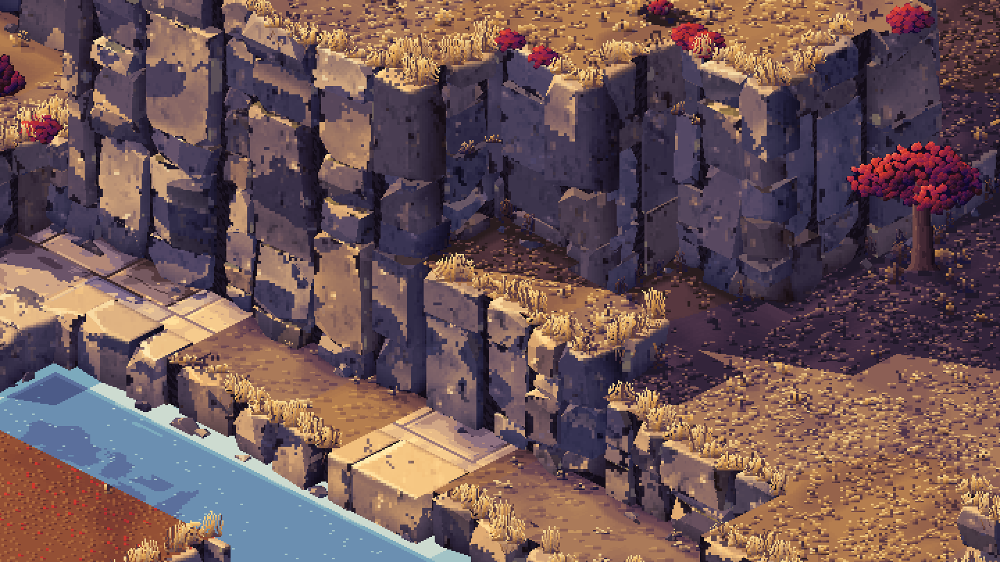
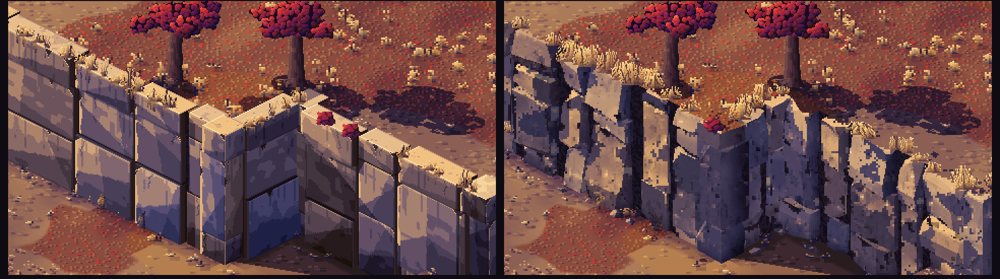
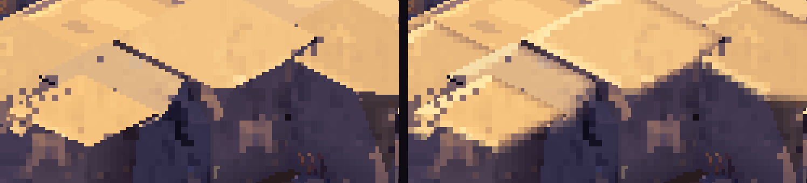
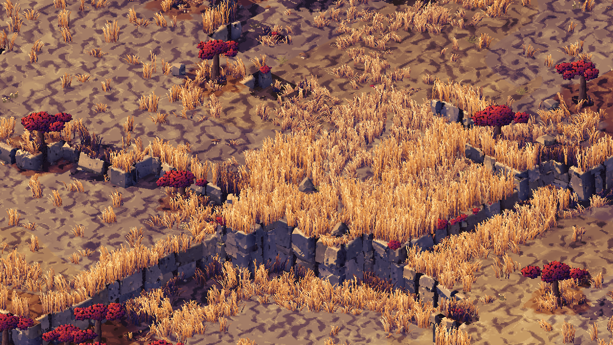
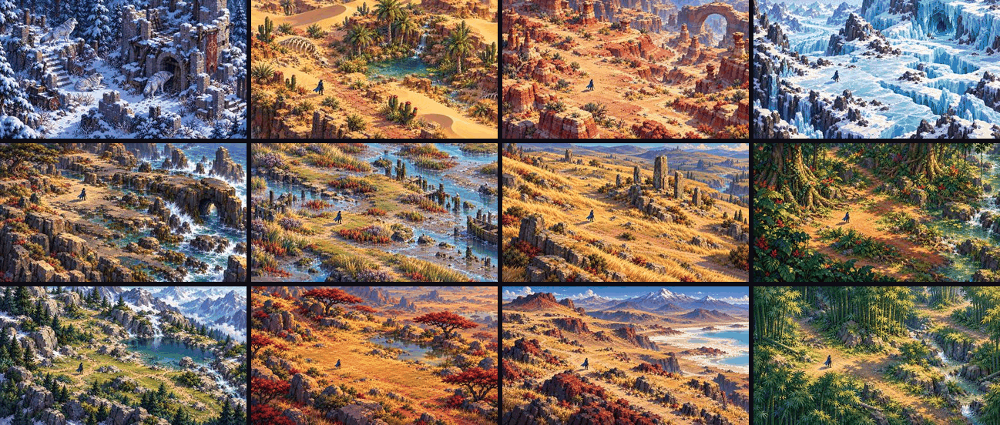
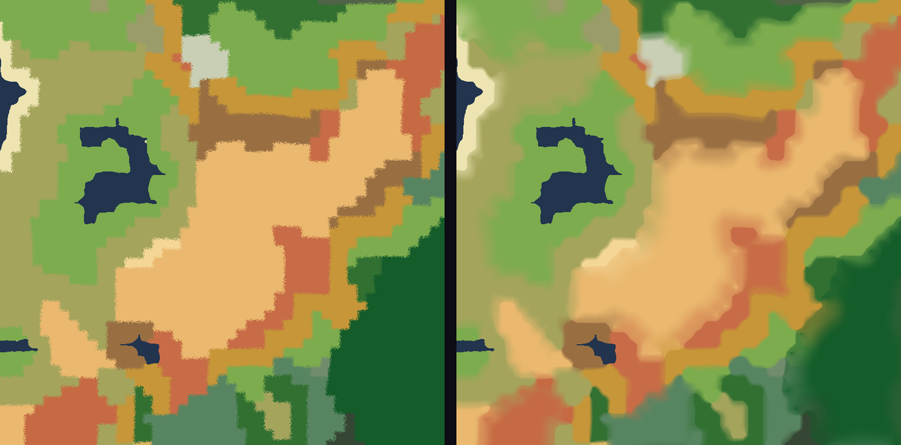
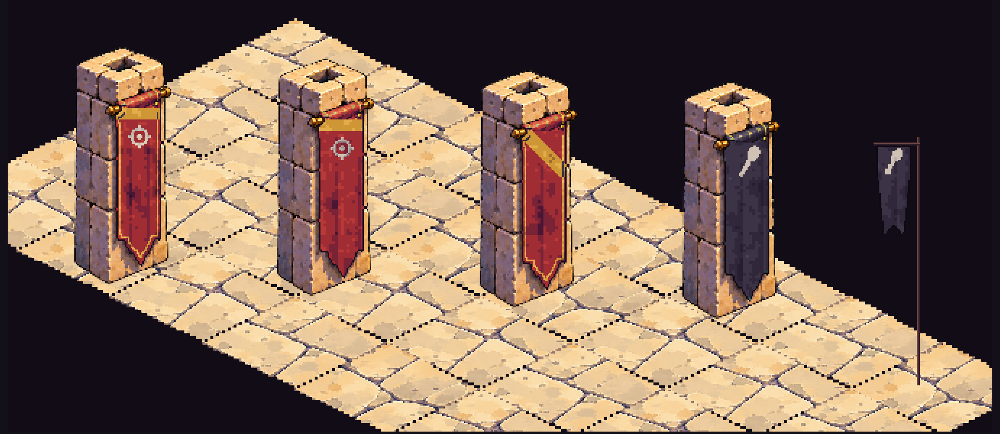
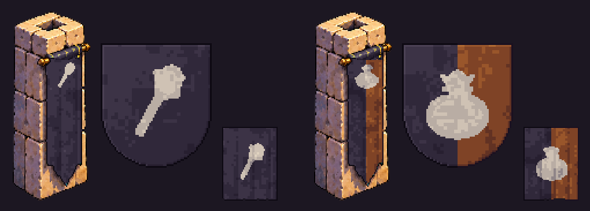
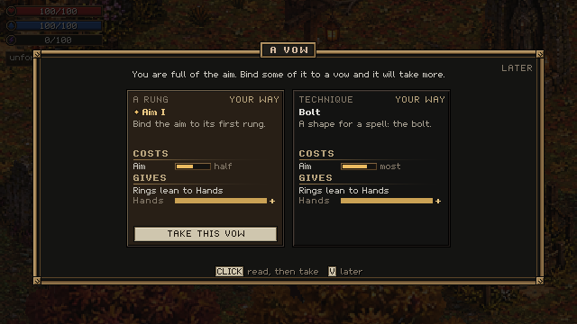
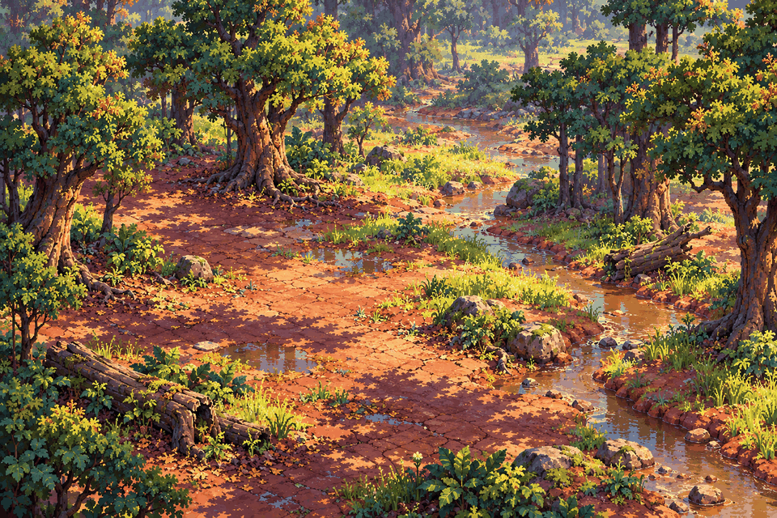

Day 13: natural stone, golden grass and lands that blend
4 October 2026 · Day 13
The new art style's stone got its yes: it now looks like real broken rock, and the first golden grass grows at its feet. The plan to take that look across every biome is written, the world can now work out how one land should blend into the next instead of meeting it in a line, and banners belong to someone, with a history you can learn to read. Underneath, saves keep the village and the dungeons you have looted, a full essence offers you a vow, and the merchants no longer freeze the launch.

Rock walls three levels high and more, drawn entirely by the game's own code. An offline still from the style lab, shown at twice size; it is not in the game yet.
Stone that looks like rock
Last time the art style called Sculpted Pixels was on trial, and its cliffs were the weak part: clean boxes where the reference picture has broken corners. This round treats a wall as a mass of rock split along its joints. Columns stand out of the wall or sit back into it, sloping cracks break them into blocks, and wedges are knocked out of the corners. Each face catches the one afternoon sun at its own angle, so light lands in torn, warm patches and the faces turned away go violet. The fine marks on every stone are learned from the approved reference itself.

Left, the stone from the last post; right, this round. Same place, same light, twice size.
The verdict from the game's creator was "so much better", with one note: the top edges should be rounded. So they now roll over into the face instead of meeting it in a cut line, catching a bright rim where they face the sun and worn unevenly along their length.

The same two cap stones before (left) and after (right), close up at six times size: on the right the edge rolls over with a bright rim of sun. The dark joints between the stones stay, so they still read as separate blocks.
Golden grass, first round
On that stone the lab then grew the ground: calmer earth, leaf litter under the trees, mushrooms, ferns and fallen branches, and grass. Where it grows thick, the grass stands about knee-high to a person, rust at the root and gold at the tips, and it gathers at the foot of walls, along terrace edges and in small meadows.

Round one of the ground and grass, one pixel to a pixel. You can see what is still wrong: the open ground has a hard, high-contrast mottle like camouflage, and the thick grass looks combed.
That picture is not the finished look. The review said the bare ground should be calm and warm like the reference, and the grass should form rounded tufts with dark hollows, not stand in strands. A second round that does exactly that is waiting for review, and a third is being drawn.
Every biome, and the lines between them
The direction for these weeks is breadth before polish. You can start anywhere on the map, so no biome gets to be the pretty one while the rest wait. The plan for taking the style everywhere is now written down: the biomes are grouped into nine families by what they are made of (dry grass, green turf, coast, wetland, desert, snow, highland, tropical, and the limestone and basalt country), and built in waves, biggest share of the land first. The first wave is Steppe, Grassland, Beach, Marsh, Desert, Taiga, Alpine, Cloud Forest and Karst: about half of all the land.

Twelve of the 64 reference pictures the game's creator made for the style, one per biome or two. These are targets to learn from, not game art.
Those references are now catalogued, so the tools can learn each biome's own colours, surfaces and scale from them. Most are measured against the person standing in them, so a tussock or a canyon wall comes out the right size next to you. Four more studies explored biomes the world does not have yet: a monsoon woodland, serpentine barrens, a petrified forest and a kelp forest.
The other half of breadth is the seams. Today one biome stops and the next begins on a hard, stepped line. The world can now work out, for any spot, how much of each neighbouring biome is there, so you walk through a change of country rather than across it. Each biome gives about a quarter of its own size to the blend on its side: a big forest fades out over a long walk, while a narrow strip of heath keeps a pure middle.

The same piece of a forged world, in each biome's map colour. Left, today's hard edges; right, the blend. Nothing draws it in the game yet: next it gets painted, then each pair of neighbours is tuned, then the ground you walk on follows it too.
Banners you can learn to read
Banners are planned, and a first lab makes them. Every banner belongs to someone: a country, a great house, a city, or an organisation such as a guild, a bandit band or a crime boss's crew. Ordinary families never bear arms, though they may wear a lord's colours. A banner's picture comes from what really happened to its owner in the world's history, and its story is read from the same facts, so it reads as history, with no AI writing it while you play.

Four owners on one plaza: the realm, Thornwick's lord, the smiths' guild and the bandits at the ford, each banner made as well as its owner can afford. A lab picture, not the game.
Knowing whose banner it is becomes something you learn. A stranger sees "a cloth of black, a white club; you don't know whose". A local knows it is the band at the ford: eight people driven out of two villages and one who swore vengeance on the law, feared there. The crime boss's crew flies a white purse, because its founder once tried to steal one, and its motto is not its own: "The Purse always collects" is what its victims say. In time a banner should tell you, at a glance, whether a place is safe.

The band at the ford (left) and Colm's crew (right), each as a cloth on a pillar, a shield and a field banner. In the lab, every line of their history comes from events in the world, and the two stand-ins, the bandits' camp and the founding of the crew, are marked as such.
Saves, round two
Last time a save kept your character but rebuilt the rest. Now Thornwick's people carry on with the lives they had when you left: their jobs, families, grudges and purses. A dungeon you have looted stays looted, a boss you killed stays dead, and if you saved underground you continue underground, where you stood. Items left lying on the ground are still not kept.
The world you play now lives in its own folder, named for what you chose and not for the version of the game. Before, an update could quietly forge a fresh world and then refuse your save as belonging to another one. And if your world cannot be opened, the game now tells you so instead of silently dropping you onto the old test map. A save that has to be set aside is now always kept under a new name, never written over.
The longest freeze after the loading card is gone. It came from the travelling merchants planning their routes, and the fix that files every tree and rock by the tile it stands on, which was in review last time, has landed: the routes are now placed in milliseconds.
A vow when you are full

The vow card in today's build, after a season of archery has filled the aim.
A full essence used to just stay full, and your growth stalled. Now, when one fills, a small note appears under the essence readout and a vow is waiting. Press V and the card shows two or three vows that essence offers. Each says what it binds you to, roughly what it costs (shown as a fogged bar and a word, never a number) and which way your next rings will lean. Cards close to how you have been playing are marked "your way". You can take one or put it off.
There is a second decision on paper for when you are full: the essence will stay in your body in its own nature, so a fire mage runs hotter and stronger and less stable until it erupts. That is a design, not built yet.
Play-testing mode
For walking the generated world and judging what the forge makes, there is now a play-testing start: you cannot die, the animals leave you alone (and the thing in the deep stays down), you walk faster, and you can start in any land biome by name. It never touches your real save.
Two more plans
The player character has a plan: the hero stays built from the same body as everyone else, redrawn in the new style, with separate walk, run and sprint, feet that stop sliding over the ground, and many more animations. Everyone else gets them too, because they share the body.
So does the underwater. There will be five ways down: turn into a water creature, drink a potion, walk the bottom in diving gear, travel in a magic bubble, or ride a submersible. The good news is that the sea floor is already in the world's data. About a sixth of the ocean is sunlit shelf you could walk on, and the plan is to build those places first.
What went wrong
The first ground pass printed that hard camouflage mottle, and the grass read as combed hair. It took a second round, and a third is running. That ground pass was also merged before its art review had finished, so its fixes had to come as a new piece of work rather than a correction to the old one. The main line of work failed its checks for a while because a small file the engine needs to match a script to its identity had never been committed. And some long pieces of work stalled part-way and had to be restarted.
Next
The great trees: the monsoon woodland's giants first, built by a tree maker every biome can use, to replace the round placeholder trees. The hero redrawn in the new style. The sea floor drawn from the world's real depths, and a first underwater still. Then the shared structure all the biomes will build on, and the first wave two biomes at a time, with the blends between them.

The monsoon woodland study. These giant trees are what the tree maker builds first.
And six more references are arriving now, for the six biomes that had none: the Ashlands, the Salt Flats, the Volcanic country, the Blackwater, the Glasslands, and a sixth the game's creator was not sure what to call, so it arrived as the "steam flats". It is the Geyserfield: pale terraces of mineral crust, blue hot pools ringed in rust-orange, and a geyser cone throwing steam.
End of day 13: stone that looks like rock, a world that will blend, banners with a past, and a save that keeps the village.